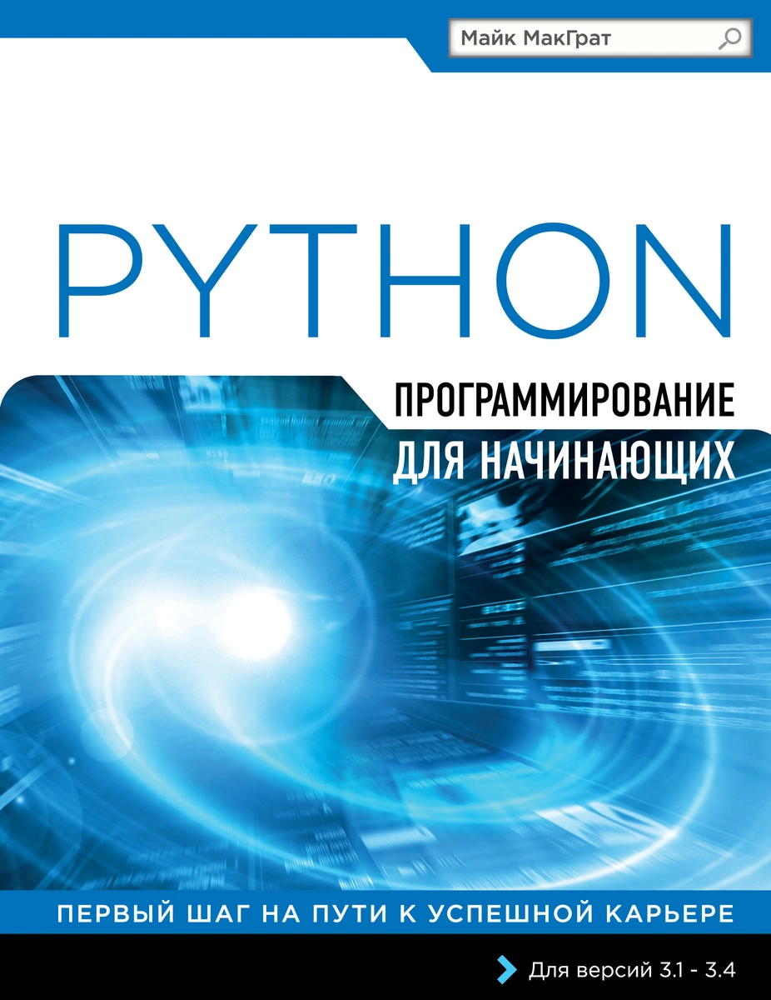
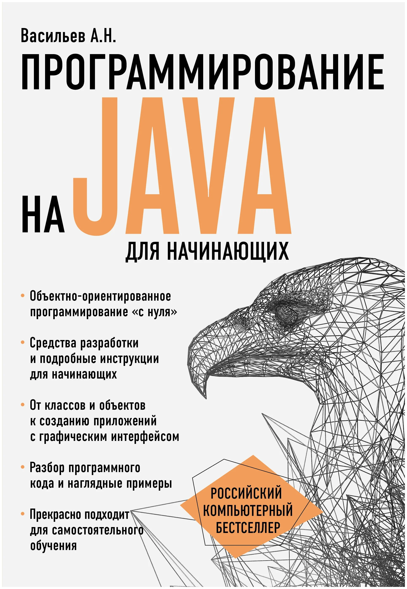
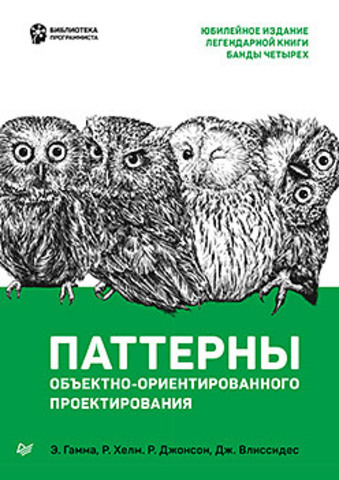

|
Совершенный код |
| Более 10 лет первое издание этой книги считалось одним из лучших практических руководств по программированию. Сейчас эта книга полностью обновлена с учетом современных тенденций и технологий и дополнена сотнями новых примеров, иллюстрирующих искусство и науку программирования. |
.webp) |
Искусство программирования |
| Первый том серии книг "Искусство программирования" начинается с описания основных понятий и методов программирования. Затем автор сосредоточивается на рассмотрении информационных структур —представлении информации внутри компьютера, структурных связях между элементами данных и способах эффективной работы с ними. |
|  |
Программирование на Python для начинающих |
| Книга «Программирование на Python для начинающих» является исчерпывающим руководством для того, чтобы научиться программировать на языке Python. В этой книге с помощью примеров программ и иллюстраций, показывающих результаты работы кода, разбираются все ключевые аспекты языка. Установив свободно распространяемый интерпретатор Python, вы с первого же дня сможете создавать свои собственные исполняемые программы! |
 |
Программирование на Python в примерах и задачах |
| Популярность языка программирования Python постоянно растет, поэтому его изучение является удачной инвестицией в себя. Такие инвестиции, как известно, всегда наиболее эффективны.
В книге рассмотрены базовые методы, подходы и конструкции, важные для понимания принципов использования языка Python на практике. Материал от главы к главе постепенно усложняется. Некоторые важные моменты достаточно часто повторяются (в разном контексте), особенно в начальных главах. Иногда похожие задачи решаются разными методами. |
|  |
Программирование на Java для начинающих |
| В своей новой книге автор популярной методики обучения языкам программирования Алексей Васильев приглашает читателей в увлекательное путешествие по Java. Без сомнения, этот язык сегодня является одним из наиболее востребованных в методологии объектно-ориентированного программирования и прекрасно подходит для освоения его азов. |
|  |
Паттерны объектно-ориентированного проектирования |
| Больше 25 лет прошло с момента выхода первого тиража книги Design Patterns. За это время книга из популярной превратилась в культовую. Во всем мире ее рекомендуют прочитать каждому, кто хочет связать жизнь с информационными технологиями и программированием. «Русский» язык, на котором разговаривают айтишники поменялся, многие англоязычные термины стали привычными, паттерны вошли в нашу жизнь. |